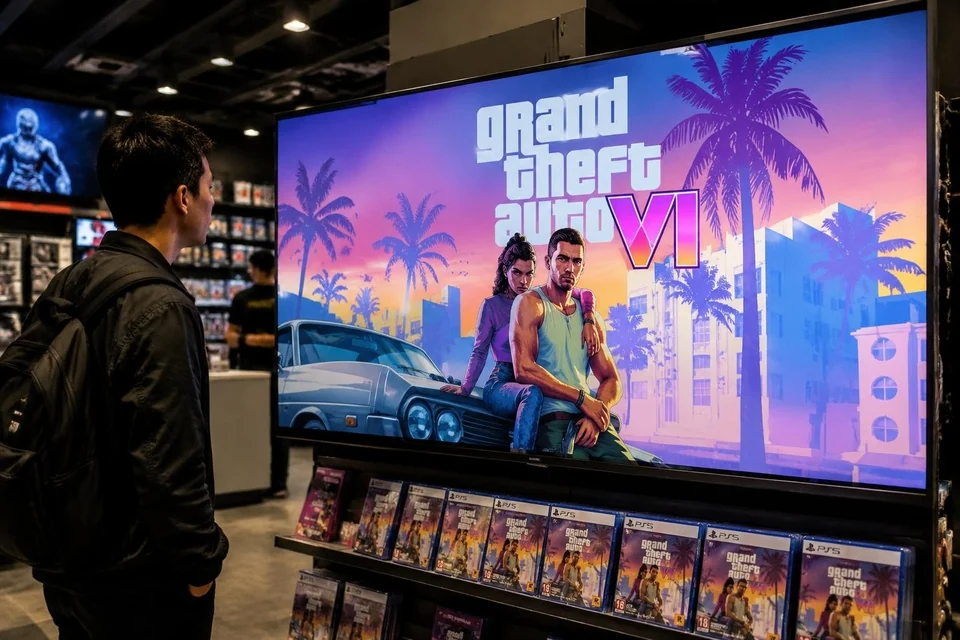

VIDEOJUEGOS · IMPACTO SOCIAL
GTA VI: ¿cuántas personas pensaban faltar al trabajo por su estreno?
La expectación por el videojuego impulsó titulares sobre millones de ausencias laborales. Las cifras exigían distinguir entre una proyección y los resultados reales.

La cifra de 1,5 millones: una estimación, no un dato comprobado
Antes del lanzamiento de Grand Theft Auto VI, algunos medios difundieron la posibilidad de que 1,5 millones de trabajadores estadounidenses se ausentaran para jugar. LifeBoxset examinó esa cifra y explicó que no existía un estudio nacional verificable que confirmara un número exacto de ausencias ni la supuesta pérdida de mil millones de dólares.
La noticia sí mencionaba una encuesta de GameSquare y Pollfish a mil adultos estadounidenses empleados y aficionados a los videojuegos. En esa muestra, un 10 % manifestó su intención de faltar el día del estreno y otro 30 % consideraba solicitar el día libre. No es correcto extrapolar esos resultados a toda la población de Estados Unidos.
¿Qué datos debemos diferenciar?
| Dato | Interpretación |
|---|---|
| 1,5 millones | Proyección de ausencias, no recuento verificado |
| 10 % | Personas encuestadas que dijeron que faltarían |
| 30 % | Personas encuestadas que consideraban pedir el día libre |
| 19/11/2026 | Fecha del lanzamiento del videojuego |
El juego se lanzó el 19 de noviembre de 2026. El artículo del 27 de octubre se conserva aquí como análisis de las expectativas previas, no como confirmación de ausencias ocurridas.
Vídeo oficial de GTA VI
El segundo tráiler oficial permite ver el tono y la ambientación del juego. La reproducción necesita conexión a internet.
Si el reproductor no aparece, abre el vídeo oficial en YouTube ↗.
Mi reflexión
El caso muestra cómo el lanzamiento de un videojuego puede convertirse en una noticia sobre hábitos laborales y consumo digital. También enseña por qué conviene contrastar cifras llamativas antes de repetirlas como hechos.